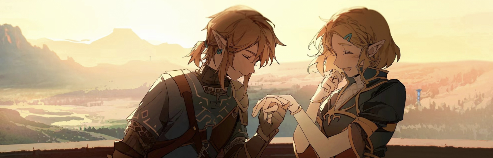

|  | ||||||
| 首页 | 游戏简介 | 人物介绍 | 玩法说明 | 我的探险 | 精美壁纸 | 返回主页 |
开发背景 |
之所以将《塞尔达传说 王国之泪》（以下简称“王国之泪”）的舞台设定为《塞尔达传说 旷野之息》（以下简称“旷野之息”） 的结局之后过了一段时间的世界，是因为制作组在结束《旷野之息》的开发时想试着实现“在游戏通关后的世界游玩”这一想法。虽然 《旷野之息》为一作完结式的故事，但由于制作组在游戏结束后的地图中看见了更多“想尝试的新点子”，他们也因此没有改变“制作 续篇”这个想法。也正因为是在并非“熟悉”而是清楚“哪里有什么”的状态下，感觉到了能实现“想开发的新玩法”的可能性的制作 组在最开始的企划书上大大地记下了“不改变地图”的重要方针。 |
主题要素 |
在开发时，制作组想呈现一种特征让玩家一眼就能看出是《王国之泪》的林克。“手牵手”这点是《王国之泪》故事的内核要素。 制作组想在《王国之泪》中呈现出玩法、系统、故事这些要素汇集在一起的感觉，所以便将“手牵手”选为这次的主题。例如在解谜的 时候，林克所有的能力都会从手中使出来，像是用手打开特殊的门，而游戏系统方面也会用到手等等，这些场面都很具有代表性。至于 故事的部分，也可说是处处皆以“手”为重要关键字的方式展开。制作组有让这个“手牵手”的视觉及故事演出带给玩家强烈的印象， BGM中也有加入拍手音来表演“手”的部分。 |
制作过程 |
正因为有规范当作基础，制作组才会安心地大胆尝试。当制作组继续开发下去时，他们在观察游戏全貌时发现那些新加入的要素 让游戏出现了巨大的转变，像是至今想说“必须改变”的内容在回过神来却变成了“应当维持现状”的状态。他们在开发初期时会感受 到强烈的既视感，所以会把“尽可能改变印象”当成首要的目标，不过在开发到一定程度时他们就会突然发现“改了反而会失去魅力” 的部分。制作组在做到最后时常会烦恼“为了消除‘既视感’而改变的内容”与“‘应当维持现状’而不变的内容”这两者的差异，他 们总是在伤脑筋、而后最终制作出所有人都能接受的内容，然后不停地重复这个过程。 在音效方面，《王国之泪》妥善地延续了《旷野之息》的氛围，让玩家能感受到在同一个世界冒险的感觉。制作组有刻意把获得 道具的音效、解开谜题的音效等内容从《交易中心》中保留下来当作《王国之泪》的特征。 |
地图设计 |
尽管《旷野之息》中有高墙与高处，但总监藤林秀麿认为它玩起来大致上仍偏向平面的感觉，所以他在《王国之泪》中才会想导 入“纵轴”，即活用高度的玩法。制作组把地面跟高空无缝相接并可自由移动这件事当作前提，设计出了更有立体感的地图。不仅林克 可利用新动作进行高空跳伞，他们也追加了林克全新的空中专用服装。而由于新动作和天空的地图实在太有新鲜感，所以藤林在上面验 证各种玩法时也将空岛变得越来越多，结果某天他就被设计师责骂说岛屿放太多，让天空看起来很脏。 从《旷野之息》开始，制作组就有贯彻一个概念，那就是所有场景都要无接缝相接。因此，游戏中像房子之类的都是按照实际大 小制作的，即便玩家进去里面也不用切换地图，甚至能从窗户看到外面的风景。不过在无接缝的天空中追加实际大小的浮空石等游乐场 之后，由于从地上仰望时尺寸太小，导致制作组在观察它们时的感觉就像垃圾浮在空中一样，而最后设计师也有帮忙把它们的外观调整 得很漂亮。天空和地面无接缝相连这部分让制作组在音效方面费了不少苦心，音效人员也常常去逼问程序人员，要他们说出天空和地面 的分界点在哪里。 |
开发理念 |
比起“想让玩家用这种方式游玩”，制作组更注重“玩家能不能好好尝试自己认为‘行得通吗？’的想法”这件事，他们觉得一 旦定义“希望用这种方式游玩”，游戏就会逐渐成为有固定答案的问题。《王国之泪》中“任何事都可以做”的方向性，正是出自《旷 野之息》中那些发明各式各样玩法的玩家的回响。青沼认为比起玩家单纯用他们准备的方法解开他们准备的谜题，他认为让每位玩家自 创玩法这种方式更能让玩家感受到“独一无二”的成就感。
|